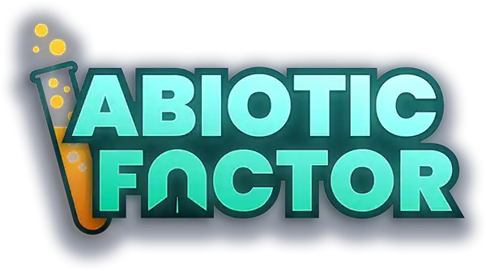

> ← DESLIZE PARA VER TODAS AS ABAS →
FICHA TÉCNICA DO JOGO
DEVDeep Field Games (Nova Zelândia)
PUBLISHERPlaystack
ENGINEUnreal Engine
LANÇAMENTO22 Jul 2025 (1.0) · 2 Mai 2024 (EA)
PLATAFORMASPC · PS5 · Xbox Series X/S
MODOSSolo / Co-op até 6 jogadores online
GÊNEROSurvival Crafting · First-Person
AMBIENTAÇÃO1993 · Outback Australiano (underground)
DIRETORGeoff "Zag" Keene
NARRATIVAHenry Feltham
ARTEConnor "MadDok" Moran
EQUIPE~10 desenvolvedores (trabalho remoto)
GAMEPASS/PS+Disponível desde o dia do lançamento 1.0
VENDAS1,5 milhão de cópias (Agosto 2025)
TEMPO MÉDIO50–60h (história completa)
INSPIRAÇÕESHalf-Life · Valheim · Sea of Thieves · Project Zomboid
DIFICULDADE DA PLATINA
1
5/10 — MODERADO (Open World + Grind)
10
A dificuldade vem do TEMPO e VOLUME (54 troféus, 40 Bronze) — não da habilidade.
Em co-op o grind de 50/100 kills da Ordem é muito mais rápido.
Em co-op o grind de 50/100 kills da Ordem é muito mais rápido.
// ALERTAS CRÍTICOS
⚠️ Net Launcher: construa ANTES de matar todos os Lab Rats (Rato de Laboratório).
⚠️ Boneco (Dummy): portal nas Minas do Manufacturing West — NÃO pule!
⚠️ Kylie Muir: Chip Neural Hiperdenso na Robótica da Hydroplant — quest longa, comece cedo.
⚠️ Uniformes: Manufacturing (Upper Shipping) e Hydroplant (elevador subaquático) — examine os corpos!
⚠️ NPCs: Interaja com todos os NPCs encontrados — alguns têm sidequests com troféus únicos.
✓ Pesca: pesque constantemente — Captura Rara depende de RNG.
⚠️ Boneco (Dummy): portal nas Minas do Manufacturing West — NÃO pule!
⚠️ Kylie Muir: Chip Neural Hiperdenso na Robótica da Hydroplant — quest longa, comece cedo.
⚠️ Uniformes: Manufacturing (Upper Shipping) e Hydroplant (elevador subaquático) — examine os corpos!
⚠️ NPCs: Interaja com todos os NPCs encontrados — alguns têm sidequests com troféus únicos.
✓ Pesca: pesque constantemente — Captura Rara depende de RNG.
// 1 JOGATINA — CONFIRMADO
Todos os 54 troféus podem ser obtidos em uma única jogatina.
Não há troféus de New Game+ ou dificuldades exclusivas.
Não há troféus de multiplayer obrigatório (co-op é opcional mas recomendado).
A wiki oficial confirma: "Can return via portal or Teleporte Pessoal" — sem pontos sem retorno definitivos.
Não há troféus de New Game+ ou dificuldades exclusivas.
Não há troféus de multiplayer obrigatório (co-op é opcional mas recomendado).
A wiki oficial confirma: "Can return via portal or Teleporte Pessoal" — sem pontos sem retorno definitivos.
// SOBRE O JOGO — CONTEXTO
Abiotic Factor coloca os jogadores no papel de cientistas presos em 1993 dentro da instalação subterrânea secreta GATE (Garrick Advanced Technology Enterprises), construída num antigo garimpo de lítio no outback australiano. Diferente da maioria dos survival games, aqui você não é um guerreiro — você é inteligente, mas fraco.
O jogo é inspirado pelo estilo visual e ambiental de Half-Life, com bondes, máquinas de venda automática e jalecos. O sistema de crafting foi influenciado pelo Wordle — arraste materiais para encontrar combinações válidas. A progressão passa por setores interconectados e portais para Anteversos (dimensões alternadas), que resetam duas vezes por semana para coleta de recursos renováveis.
O jogo é inspirado pelo estilo visual e ambiental de Half-Life, com bondes, máquinas de venda automática e jalecos. O sistema de crafting foi influenciado pelo Wordle — arraste materiais para encontrar combinações válidas. A progressão passa por setores interconectados e portais para Anteversos (dimensões alternadas), que resetam duas vezes por semana para coleta de recursos renováveis.
RECEPÇÃO CRÍTICA
88/100
METACRITIC (PC)
83%
OPENCRITIC RECOMENDAM
92%
PC GAMER (UK)
95.5%
STEAM (OVERWHELMINGLY POS.)
8.2/10
XBOXERA
86/100
GAME8
O PC Gamer classificou como "um dos melhores survival crafting games já feitos" e "um clássico em formação". O jogo foi eleito Melhor Jogo Co-op para PC de 2025 pelo PC Gamer. Mais de 24.000 avaliações no Steam no lançamento 1.0, com 95.5% positivas.
HISTÓRICO DE UPDATES PRINCIPAIS
Mai 2024
Early Access — Lançamento Inicial
Lançamento no Steam com as 3 primeiras fases: Escritório, Manufacturing West e Laboratórios Cascata. 250.000 cópias nos primeiros 8 dias.
Ago 2024
Crush Depth
Adicionou Setor Segurança, Hidroplanta e novos portais. Introduziu veículos, pesca, jetpacks e a Katana a Laser. Sistema de temperatura reformulado.
Fev 2025
Dark Energy
Adicionou os Reatores com flora bioluminescente, a facção Guardião do Portãos, teletransportadores, pontes de luz sólida e novo sistema de mercadores itinerantes.
Jul 2025
Cold Fusion — Versão 1.0 (Lançamento Completo)
Setor Residencial congelado, Bancada de Aprimoramento (upgrade de armas/armaduras), novos eventos climáticos, criaturas como o Moving Box (companion coletor). Disponível no PS5, Xbox Series X/S, Game Pass e PlayStation Plus no dia do lançamento.
PRÊMIOS & INDICAÇÕES
🏆 NZ Game Awards (The Pavs) 2025
✓ Grand Prize — VENCEDOR
✓ Excellence in Design — VENCEDOR
◦ Excellence in Narrative — Indicado
◦ Excellence in Accessibility — Indicado
🎮 Golden Joystick Awards 2024
◦ Best Multiplayer Game — Indicado
🎮 Golden Joystick Awards 2025
◦ Best Indie Game — Indicado
◦ PC Game of the Year — Indicado
📰 PC Gamer Game of the Year 2025
✓ Melhor Jogo Co-op para PC — VENCEDOR
HISTÓRICO DE VENDAS
200k
WISHLISTS NO LANÇAMENTO EA
250k
CÓPIAS NOS PRIMEIROS 8 DIAS
600k
CÓPIAS NOS PRIMEIROS 3 MESES
1.5M+
CÓPIAS TOTAIS (AGO 2025)
Jogadores por região: 38% Estados Unidos · 21% China · demais globalmente.
Financiamento inicial: Grant de NZ$150.000 do governo da Nova Zelândia (CODE) + Kiwi Gaming Fund (Alt Ventures).
Financiamento inicial: Grant de NZ$150.000 do governo da Nova Zelândia (CODE) + Kiwi Gaming Fund (Alt Ventures).
// PROGRESSO — TROFÉUS MARCADOS
0/53 TROFÉUS
// COBERTURA DESTA ABA
Cada setor lista: objetivos principais · itens importantes a coletar · NPCs e portais · alertas críticos · todos os troféus obtíveis naquele setor.
Os nomes em PT-BR são a tradução oficial da Steam (mesma usada no jogo, via Exophase) — não são traduções livres. O título original em inglês aparece em itálico em cada troféu.
Os nomes em PT-BR são a tradução oficial da Steam (mesma usada no jogo, via Exophase) — não são traduções livres. O título original em inglês aparece em itálico em cada troféu.
⚠️ CRÍTICO — Ação obrigatória, fácil de perder.
✦ AUTOMÁTICO — Vem com a progressão normal.
◆ ATENÇÃO — Método específico ou timing necessário.
Clique em qualquer troféu para marcar como obtido. Expanda cada setor para ver detalhes.
Clique em qualquer troféu para marcar como obtido. Expanda cada setor para ver detalhes.
// TROFÉUS QUE EXIGEM ATENÇÃO ATIVA
Abiotic Factor permite retornar à maioria das áreas por portais ou Teleporte Pessoal.
MAS alguns troféus dependem de itens/loot específicos que existem em quantidades limitadas ou são facilmente perdidos ao avançar de setor.
MAS alguns troféus dependem de itens/loot específicos que existem em quantidades limitadas ou são facilmente perdidos ao avançar de setor.
CHECKLIST — VERIFIQUE ANTES DE AVANÇAR DE SETOR
// NPCs COM SIDEQUESTS — ATENÇÃO ATIVA REQUERIDA
Vários NPCs espalhados pela GATE Facility possuem sidequests que concedem troféus únicos ou itens essenciais para platina.
Interaja com TODOS os NPCs encontrados — muitos têm diálogos em múltiplas etapas e reaparecem em setores posteriores.
A sidequest de Kylie Muir, por exemplo, atravessa três setores inteiros.
Interaja com TODOS os NPCs encontrados — muitos têm diálogos em múltiplas etapas e reaparecem em setores posteriores.
A sidequest de Kylie Muir, por exemplo, atravessa três setores inteiros.
REFERÊNCIA — COMMUNITY REPORT
> Discussão da comunidade sobre NPCs e sidequests perdíveis:
→ Reddit r/AbioticFactor · NPCs Perdíveis — Thread da Comunidade
🗺️ ESCOLHER MAPA
🗺️Images/MUNDO/GATEPAL.webp não encontrada ainda
100%
// GUIA DE SETORES — VISÃO GERAL
A GATE Cascade Research Facility é dividida em setores interconectados, cada um com sua própria atmosfera e desafios.
Use o Teleporte Pessoal ou portais para navegar entre setores já visitados.
Explore completamente cada setor antes de avançar — retornar é possível mas custoso em tempo.
Use o Teleporte Pessoal ou portais para navegar entre setores já visitados.
Explore completamente cada setor antes de avançar — retornar é possível mas custoso em tempo.
// DICAS DE NAVEGAÇÃO
MAPAS DETALHADOS — FONTE EXTERNA
> Para mapas visuais completos de cada setor com pontos de interesse marcados:
→ TechRaptor · Abiotic Factor Map Guide — All Sector Maps (EN)
Inclui mapas de: Office, Manufacturing, Laboratórios Cascata, Security, Hydroplant, Reactors e todos os Portal Worlds.
// MUNDOS PORTAIS — LISTA COMPLETA
Abiotic Factor possui 12+ mundos dimensionais acessíveis via portais espalhados pela Facility.
Cada portal leva a um ambiente completamente diferente — com inimigos, loot e troféus únicos.
A maioria dos troféus de portais é concedida automaticamente ao sair pelo lado correto. Explore cada um completamente!
Cada portal leva a um ambiente completamente diferente — com inimigos, loot e troféus únicos.
A maioria dos troféus de portais é concedida automaticamente ao sair pelo lado correto. Explore cada um completamente!
REFERÊNCIA EXTERNA — GUIA COMPLETO DE PORTAIS
> Lista completa com localizações, recompensas e dicas por portal:
→ PlayerAuctions · Portal Worlds — Full List, Locations & Rewards Guide (EN)
// COMO CRAFTAR — MECÂNICA BÁSICA
A maioria dos itens exige uma Bancada de Criação energizada. Poucos itens (incluindo a própria Bancada) podem ser feitos à mão no inventário.
Como desbloquear receitas: (1) Pegue todos os materiais da receita · (2) Leia notas/documentos · (3) Fale com NPCs · (4) Pesquise na Estação de Pesquisa.
Reciclagem: Use o Repair & Salvage Station para destruir itens e recuperar parte dos materiais. Único jeito de obter certos recursos no early game.
Teleporte Pessoal pode ser vinculado a qualquer Bancada de Criação — teleporta instantaneamente de volta à base de qualquer lugar.
Como desbloquear receitas: (1) Pegue todos os materiais da receita · (2) Leia notas/documentos · (3) Fale com NPCs · (4) Pesquise na Estação de Pesquisa.
Reciclagem: Use o Repair & Salvage Station para destruir itens e recuperar parte dos materiais. Único jeito de obter certos recursos no early game.
Teleporte Pessoal pode ser vinculado a qualquer Bancada de Criação — teleporta instantaneamente de volta à base de qualquer lugar.
PRIORIDADE DE CRAFT — O QUE FAZER PRIMEIRO
MÉTODOS DE FARM DE XP — CRAFTING SKILL
// PREPARO — CONSUMA ANTES DE COMEÇAR A FARMAR
Os 3 buffs abaixo empilham entre si. Prepare os 3 antes de iniciar qualquer sessão de farm — a diferença de XP acumulado no fim é grande.
FONTES
// OBJETOS FABRICÁVEIS — CATÁLOGO DE CONSTRUÇÃO GATE
Catálogo de bancadas, armazenamento, energia, defesa, transporte e utilidades que podem ser fabricadas e posicionadas na base. A maioria exige uma ferramenta de construção no inventário (Chave de Fenda, Furadeira) para ser montada depois de fabricada.
Dados de receitas compilados a partir da Wiki Oficial — Deployable Objects e do TechRaptor — Crafting & Unlocks Guide. Catálogo com 64 objetos fabricáveis por receita nas 6 categorias — cobre praticamente tudo que tem uma receita real de crafting. Fora do catálogo ficam apenas móveis decorativos que só existem encontrados no mundo (cadeiras, mesas, quadros, cubículos) e são obtidos empacotando-os com uma ferramenta de construção, não fabricados — esses não têm "receita" pra mostrar aqui.
📐 Blueprint
ESQUEMÁTICO GATE
📍 COMO OBTER A RECEITA
SIMULAR QUANTIDADE:
📦 MATERIAIS NECESSÁRIOS
SISTEMA DE QUÍMICA — DESTILAÇÕES E CONCOCÇÕES
Sistema de crafting em 2 estágios adicionado na atualização Cosmic Companions. Desbloqueado ao chegar nos Laboratórios Cascata, com a skill de Química ativa. Materiais orgânicos e anômalos viram Destilações na Bancada de Destilação — e essas Destilações viram Revestimentos, Frascos e Tinturas na Bancada de Química.
1
BANCADA DE DESTILAÇÃO
Coloque 1 item orgânico/anômalo no frasco de entrada (esquerda). Ative a bancada. Após alguns segundos, uma Destilação sai no frasco de saída (direita). O resultado depende 100% do item usado — experimente.
→
2
BANCADA DE QUÍMICA
Tem 3 entradas — cada uma aceita até 8 doses da mesma Destilação. Encha as 3 com a proporção certa e vire a válvula. Precisa de pelo menos 3 tipos de Destilação diferentes já descobertos pra desbloquear esta etapa.
⚠️ ERRAR A RECEITA TEM CONSEQUÊNCIA: misturar 3 Destilações na proporção errada, ou 2 Destilações + 1 Lodo Nocivo, gera um Frasco Instável — e ainda causa uma pequena explosão na bancada com empurrão (knockback) em quem estiver perto. Confira a receita antes de virar a válvula: a bancada não devolve as Destilações depois de ativada.
// ETAPA 1 — AS 16 DESTILAÇÕES (clique pra filtrar o que usa cada uma)
Toque numa Destilação para ver só os Revestimentos/Frascos/Tinturas que a usam. Toque de novo (ou em "Limpar filtro") pra voltar a ver tudo.
// ETAPA 2 — REVESTIMENTOS, FRASCOS E TINTURAS
Dados de receitas, efeitos e fontes de Destilação compilados a partir da Wiki Oficial — Chemistry. Catálogo com as 16 Destilações e as 32 Concocções (10 Revestimentos, 12 Frascos, 10 Tinturas) conhecidas até a atualização Cosmic Companions.
// DICAS ESSENCIAIS — COMPILADO DA COMUNIDADE
Dicas coletadas de guias especializados e da comunidade Reddit do Abiotic Factor.
Combinando estratégias de sobrevivência, crafting e otimização para uma jogatina de platina eficiente.
Combinando estratégias de sobrevivência, crafting e otimização para uma jogatina de platina eficiente.
// PERGUNTAS E RESPOSTAS — DÚVIDAS COMUNS DE INICIANTE
ℹ️ LISTA EM CONSTRUÇÃO: as perguntas abaixo são um conjunto inicial e serão ampliadas ao longo do tempo — não é uma cobertura completa de todas as dúvidas possíveis. Novas perguntas passam por verificação em fontes confiáveis (Wiki oficial e guias especializados) antes de entrarem aqui, mas para decisões importantes de jogatina vale sempre confirmar também na Wiki oficial ou dentro do próprio jogo.
// COMO EVOLUIR HABILIDADES RAPIDAMENTE
> Fonte completa: Critical Hits · Guia de Habilidades PT-BR
// COMO SE CURAR E TRATAR EFEITOS NEGATIVOS
Remédios em Abiotic Factor se dividem entre restauradores de saúde e tratadores de status negativos. A maioria age com o tempo — procure um local seguro para recuperar antes de voltar ao combate. Manter alimentação e hidratação também regenera HP naturalmente.
> Fonte completa: Critical Hits · Guia de Cura e Efeitos PT-BR
// MELHORES ARMADURAS — TIER LIST
A armadura certa faz mais do que proteger — bônus de set podem desviar balas, curar automaticamente e aumentar stats. Selecione conforme seu estilo de jogo e setor atual.
> Tier list completa com stats e receitas: BisectHosting · Best Armor Set Tier List
// MELHORES ARMAS — GUIA RÁPIDO
Abiotic Factor tem mais de 90 armas. Todas são viáveis — a escolha depende do setor e estilo de combate. Tenha sempre uma Estação de Carregamento para armas com carga. Complemente com granadas (Slushie Bombs, Electron Grenades).
> Ranking completo: Dot Esports · Best Weapons Ranked (EN)
// DICAS GERAIS DE GAMEPLAY
FONTES EXTERNAS — LEITURA RECOMENDADA
// NOTA SOBRE OS NOMES DOS TROFÉUS
Abiotic Factor é jogo de PC (Steam) e os troféus abaixo usam a tradução oficial em PT-BR da Steam (a mesma que aparece no jogo, via Exophase) — não são traduções livres. O nome original em inglês sempre aparece em itálico abaixo de cada troféu.
🔴 CRÍTICO — Fácil de perder permanentemente. Ação ativa necessária antes de avançar.
🟡 ATENÇÃO — Requer método específico ou timing certo. Não é automático.
🟢 NORMAL — Obtido naturalmente, sem risco. Pode ser grind ou RNG mas sem ponto de não-retorno.
FONTES COMPLETAS DE TROFÉUS
> Wiki Oficial: abioticfactor.wiki.gg/wiki/Achievements
> Guia BisectHosting PT-BR: bisecthosting.com · All Trophies & How to Get Them
> Exophase PS5: exophase.com · Abiotic Factor Achievements PT-BR
> PSNProfiles: psnprofiles.com/trophies/35362-abiotic-factor
// TRADERS — COMERCIANTES DA FACILITY
Abiotic Factor tem traders fixos e itinerantes espalhados pela Facility. Pressione F / Y / △ para abrir a tela de troca.
Traders itinerantes (Grayson, Marion, Dr. Carson) visitam sua base em dias específicos se tiver infraestrutura adequada. Traders fixos nunca somem.
Dica crítica: Use um Bandage em Grayson quando o encontrar ferido — ele só se torna trader se você o curar.
Traders itinerantes (Grayson, Marion, Dr. Carson) visitam sua base em dias específicos se tiver infraestrutura adequada. Traders fixos nunca somem.
Dica crítica: Use um Bandage em Grayson quando o encontrar ferido — ele só se torna trader se você o curar.
// CULINÁRIA — SOPAS & RECEITAS
Sopas fornecem buffs temporários poderosos — XP extra em skills, resistências, stamina aumentada. Essenciais para otimizar o grind de habilidades.
Como cozinhar: Requer Cooking Nível 3 + Fogão Portátil + Soup Bowl + Water.
Atenção: Ingredientes errados = Bad Soup (debuffs fracos) ou Harmful Soup (pode matar). Siga as receitas exatas.
Como cozinhar: Requer Cooking Nível 3 + Fogão Portátil + Soup Bowl + Water.
Atenção: Ingredientes errados = Bad Soup (debuffs fracos) ou Harmful Soup (pode matar). Siga as receitas exatas.
GATE_OS v3.12 // SINTETIZADOR PRONTO
SYNTH-LAB
// LABORATÓRIO DE SOPAS — MONTE E DESCUBRA
Clique nos ingredientes pra jogar na panela (até 3), depois cozinhe. Acertar a combinação exata revela a sopa; errar vira Sopa Ruim — igual no jogo de verdade.
CÂMARA DE REAÇÃO
TEMP: 98.4°C
// ENTIDADES & INIMIGOS
Inimigos são classificados em Humanos, Criaturas e Robôs.
Sistema de dano: Fraqueza = 1.5× dano · Resistência = 0.5× dano · Imunidade = 0 dano.
Escudos bloqueiam por classe: Light < Medium < Heavy < Super (inbloqueável). Dano "Holy" ignora armadura E escudo.
Sistema de dano: Fraqueza = 1.5× dano · Resistência = 0.5× dano · Imunidade = 0 dano.
Escudos bloqueiam por classe: Light < Medium < Heavy < Super (inbloqueável). Dano "Holy" ignora armadura E escudo.
// SISTEMA DE PETS — ATUALIZAÇÃO COSMIC COMPANIONS
4 famílias domesticáveis — Pragas, Pecaris, Lagartos e Lamogi — totalizando 22 variantes, além de 2 invocações automáticas de Set de Armadura que não precisam ser domesticadas.
Cada família tem seu próprio método de captura: Pest Trap (Pragas e Lagartos, sem precisar de Química), Frasco de Feromônio + 3x Trigo Anteverso (Pecaris, só depois de desbloquear Química) ou Lançador de Rede (Lagartos, 5 acertos).
Muitas variantes não são capturadas no mundo — são mutações: alimente um pet já domesticado com 3x de um item específico pra transformá-lo em algo novo.
Cada família tem seu próprio método de captura: Pest Trap (Pragas e Lagartos, sem precisar de Química), Frasco de Feromônio + 3x Trigo Anteverso (Pecaris, só depois de desbloquear Química) ou Lançador de Rede (Lagartos, 5 acertos).
Muitas variantes não são capturadas no mundo — são mutações: alimente um pet já domesticado com 3x de um item específico pra transformá-lo em algo novo.
ALIMENTAÇÃO
A cada 8h in-game (16 min reais)
XP = Fome do alimento ÷ 3 · mín. 4, máx. 20 por alimentada
NÍVEL MÁXIMO
Nível 20
~38 alimentadas · mínimo 13 dias in-game inteiros
ESTADO CRÍTICO (DBNO)
30s pra reviver, ou morre de vez
Pet no Slot de Companheiro NUNCA morre de vez — só fica caído até você reviver
SLOT vs. CAMA
Slot = leva pra luta · Cama = 100% seguro
Pet solto sem slot nem cama pode morrer de vez normalmente
Ao reviver de um estado crítico, o pet volta com apenas 25% de HP — não mande ele de volta pra mesma luta na hora. Pragas e Lagartos também podem ser guardados numa Pest Trap como forma alternativa de armazenamento, e ambos servem pra gerar energia numa Roda de Praga (Pest Wheel) se colocados manualmente lá dentro.
// EVENTOS CLIMÁTICOS
A GATE Facility sofre eventos climáticos aleatórios que duram o dia inteiro — sempre anunciados às 7h e ativos até as 7h do dia seguinte, a menos que você desligue antes.
Depois que um evento termina, a Facility fica 4 dias sem novos eventos; passado esse período, há 20% de chance de um novo evento começar a cada 7h.
A maioria dos eventos tem um botão de desligar escondido em algum lugar da Facility — conhecer o local é sua principal ferramenta contra eles.
Dica: Fenômeno da Névoa é a única forma de encontrar Sinfonistas fora de Flathill — necessário para o troféu Sorte Cega.
Depois que um evento termina, a Facility fica 4 dias sem novos eventos; passado esse período, há 20% de chance de um novo evento começar a cada 7h.
A maioria dos eventos tem um botão de desligar escondido em algum lugar da Facility — conhecer o local é sua principal ferramenta contra eles.
Dica: Fenômeno da Névoa é a única forma de encontrar Sinfonistas fora de Flathill — necessário para o troféu Sorte Cega.
// LORE — HISTÓRIA & FAÇÕES
A narrativa de Abiotic Factor é contada via e-mails, notas, terminais e diálogos de NPCs — nunca em cutscenes.
O mundo tem múltiplas fações com motivações distintas e uma cronologia de eventos que explica como a Facility entrou em colapso.
Dica: Leia cada documento encontrado — além de lore, muitos contam localização de itens secretos e senhas de terminais.
O mundo tem múltiplas fações com motivações distintas e uma cronologia de eventos que explica como a Facility entrou em colapso.
Dica: Leia cada documento encontrado — além de lore, muitos contam localização de itens secretos e senhas de terminais.
// JOBS & TRAITS — CRIAÇÃO DE PERSONAGEM
Jobs definem suas skills iniciais e bônus passivos. Traits são modificadores permanentes comprados com pontos (positivos custam pontos, negativos concedem pontos).
Jobs podem ser trocados em Laboratórios Cascata via IS-0017, mas resetam suas skills para nível 3 e não dão o gear inicial do novo job.
Regra de ouro: Escolha o Job com mais pontos de Trait — isso dá mais liberdade para customizar o personagem.
Jobs podem ser trocados em Laboratórios Cascata via IS-0017, mas resetam suas skills para nível 3 e não dão o gear inicial do novo job.
Regra de ouro: Escolha o Job com mais pontos de Trait — isso dá mais liberdade para customizar o personagem.
JOBS — TIER LIST
TRAITS — GUIA COMPLETO
✓ POSITIVOS — CUSTAM PONTOS
✗ NEGATIVOS — CONCEDEM PONTOS